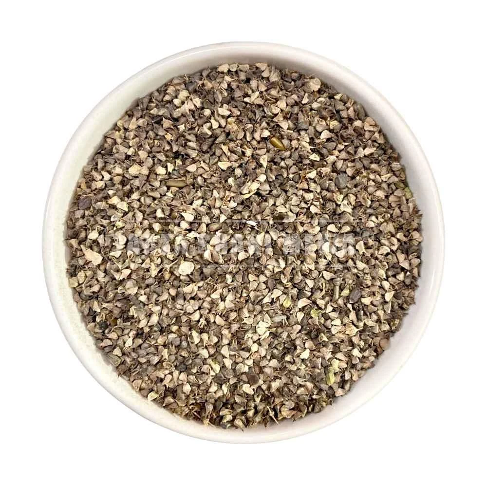

Suitable forAll ages - children and adults


Cough & Allergy
QoughSOL
QoughSol is an herbal cough syrup that provides quick relief from various cough symptoms. As a GMP-certified product established in 1967, it blends long-standing tradition with certified manufacturing standards to support respiratory health.
Suggested doseChildren: 5 mL three times daily. Adults: 10 mL three times daily.
Packing & MRP
| Pack | MRP |
|---|---|
| 60ML | ₹70 |
| 110ML | ₹100 |
Availability and pack selection can be confirmed with our team.
Product information
Indications & expected results
Presented consistently from the available product literature.
Indications
- All types of coughसभी प्रकार की खाँसी
- Sore throatगले की खराश
- Bronchitisब्रोंकाइटिस
- Smoker's coughधूम्रपान से होने वाली खाँसी
- Catarrhबलगम की समस्या
Results
- Relieves cough
- Helps clear mucus
- Soothes sore throat
- Supports easy breathing
Product information is provided for awareness and enquiry. Use as directed on the label or by a qualified healthcare professional.
Ayurvedic formulation
Ingredients
Ingredient names and botanical details where available.

Vasika Leaves (Adhatoda vasica)
Vasika leaves are a well-known Ayurvedic herb traditionally used to support respiratory and lung health.

Tulsi Leaf (Ocimum sanctum)
Tulsi, Holy Basil, is a popular Ayurvedic herb known for boosting immunity and supporting respiratory health.

Mulethi Rhizome (Glycyrrhiza glabra)
Mulethi (Licorice root) is used in Ayurveda for soothing throat irritation and respiratory support.

Khareti (Sida cordifolia)
Khareti is a traditional Ayurvedic herb known for its strengthening and rejuvenating properties.

Amaltas Pulp (Cassia fistula)
Amaltas pulp is a widely used Ayurvedic ingredient known for its gentle cleansing and digestive-supporting properties.
Neelophar (Nymphaea stellata)
Neelophar (Blue Lotus) may help promote relaxation, reduce stress, and support restful sleep.

Unnab (Ziziphus jujuba)
Unnab (Jujube) may help support respiratory health, improve digestion, and strengthen immunity.
Banafsha (Viola odorata)
Banafsha (Sweet Violet) may help support respiratory health and relieve cough and throat irritation.
Peppermint (Mentha piperita)
Peppermint is a refreshing herb known for its cooling and digestive-supporting properties.
Continue exploring